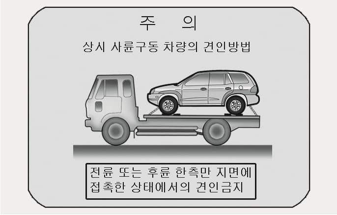

견인 관련 유의 사항

2C_TowingWarning
반드시 4륜을 모두 들어 올려서 견인하거나 돌리(바퀴 달린 수레)를 사용하여 견인하십시오.
차량 견인에 관한 자세한 내용은 8장 내 '차량을 견인해야 할 때'을 참고하십시오.
4WD 차량은 일반 견인 트럭으로 견인할 수 없습니다. 반드시 4륜을 들어 올려 견인하십시오.

2C_TowingWarning
반드시 4륜을 모두 들어 올려서 견인하거나 돌리(바퀴 달린 수레)를 사용하여 견인하십시오.
차량 견인에 관한 자세한 내용은 8장 내 '차량을 견인해야 할 때'을 참고하십시오.
4WD 차량은 일반 견인 트럭으로 견인할 수 없습니다. 반드시 4륜을 들어 올려 견인하십시오.